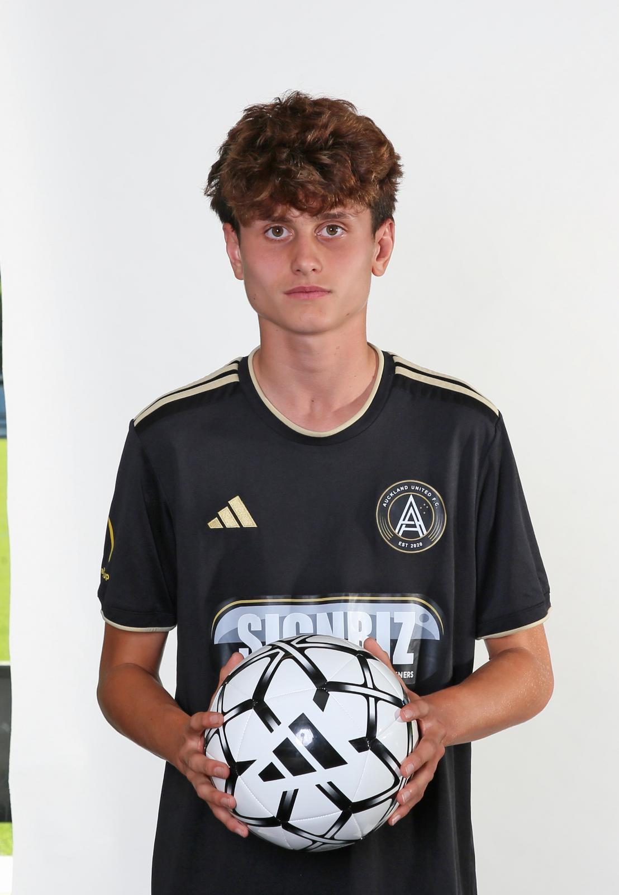

Auckland United FC | U17
Data di nascita: 11 Febbraio 2011 | Età: 15
DOB: 11 February 2011 | Age: 15
Centrocampista e terzino versatile, abituato a confrontarsi con giocatori di categoria superiore.
A versatile midfielder and full-back, accustomed to competing with older age groups.
Da due anni Luca gioca regolarmente con ragazzi piu grandi della sua eta; nel 2026, da U15, milita nell'U17 dell'Auckland United FC. Si allena con Hideto Takahashi, ex professionista di J.League e nazionale giapponese. Tra il 2024 e il 2026 ha trascorso quattro settimane a Tokyo, allenandosi con il Kashiwa Reysol e affrontando accademie giapponesi. Nel gennaio 2025 e stato invitato dall'Estoril FC in Portogallo per un periodo di allenamento e, a Pasqua, ha partecipato alla Oviedo Cup con l'Estoril contro avversari tra cui il Real Oviedo. Ha inoltre svolto una settimana di allenamento con il Lodigiani.
For the past two years, Luca has regularly played with older boys; in 2026, as an U15 player, he is competing with Auckland United FC U17. He trains under Hideto Takahashi, a former J.League and Japan international player. Across 2024 and 2026, Luca spent four weeks in Tokyo training with Kashiwa Reysol and playing against Japanese academies. In January 2025, Estoril FC in Portugal invited him to train; at Easter he joined Estoril at the Oviedo Cup, facing opposition including Real Oviedo. He has also completed a week of training with Lodigiani.
Azioni difensive, passaggi, controllo palla e gioco di possesso.
Defensive actions, passing, ball control and possession play.
Modulo 4-3-3, mediano difensivo + due trequartisti disposti a triangolo rovesciato. I marcatori dorati indicano le posizioni ricoperte da Luca.
4-3-3 shape, holding midfielder + two attacking midfielders as an inverted triangle. Gold markers show positions Luca has played.
Nato a Londra l'11 febbraio 2011, Luca vive in Nuova Zelanda dal 2017. Ha cittadinanza italiana, britannica e neozelandese e torna in Italia ogni anno, dove vive meta della sua famiglia. Cresciuto tra culture calcistiche diverse, porta curiosita, adattabilita e voglia di imparare in ogni nuovo ambiente.
Born in London on 11 February 2011, Luca has lived in New Zealand since 2017. He holds Italian, British and New Zealand passports and returns to Italy every year, where half of his family lives. Growing up across different football cultures has given him curiosity, adaptability and a willingness to learn in every new environment.